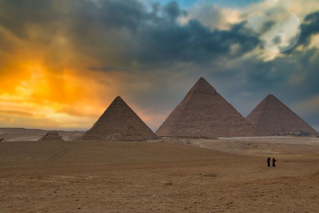
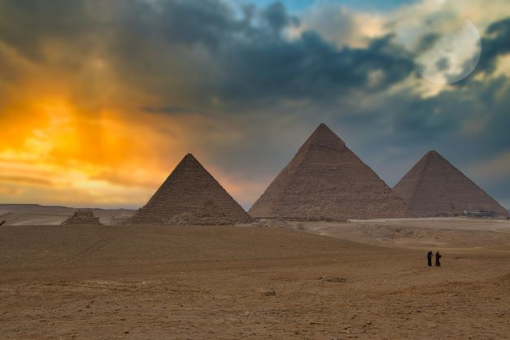

Who were the pyramids of Giza built for?
The pyramids of Giza were royal tombs built for three different pharaohs. The northernmost and oldest pyramid of the group was built for Khufu, The second king of the 4th dynasty. Called the Great Pyramid, it is the largest of the three. The middle pyramid was built for Khafre, The fourth of the eight kings of the 4th dynasty. The southermost and last pyramid to be built was that of Menkaure, The fifth king of the 4th dynasty. It is (66 meter) high, significantly smaller than the pyramids of khufu (147 meters) and khafre (143 meters).
How did the Egyptians build the pyramids?
The question of how the pyramids were built has not received a wholly satisfactory answer. The most plausible one is that the Egyptians employed a sloping and encircling embankment of brick, earth, and sand, which was increased in height and length as the pyramid rose, stone blocks were hauled up the ramp by means of sledges, rollers, and levers. It was suggested that as few as 20,000 workers, with accompanying support personnel (bakers, physicians, priests, etc.) would have been adequate for the task.
What do the pyramids of Giza represent?
Historians continue to debate about the ancient Egyptians use of the pyramid form for the royal tombs at Giza and in funerary sites elsewhere. Several theories have been proposed about what the form represents. The pyramid may function as a stairway for the pharoah's ka to reach the heavens, it could refer to the ancient mound of creation, or it might symbolize sunrays spreading to the earth.